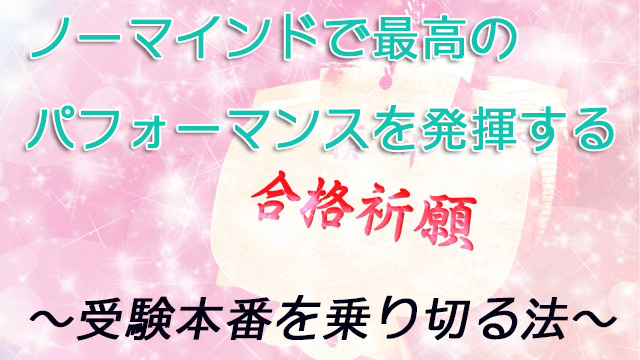

前回に続いて「受験」の話になる。
実は先週と今週２つの高校に呼ばれて、高３受験生への直前メンタルトレーニングを行って来た。
さすがに本番直前ということもあり、今までのような和気アイアイとした「楽しい雰囲気」はなく、皆ピンと張りつめた表情で聞いていた。この真剣な受験生たちを見ていると私も「何とか全員が受かって晴れやかな笑顔になって欲しい」と祈るような気持ちになった。
さて、受験生諸君に最後に伝えたかったのは実は力を出し切りたかったら「思考を落とす」ことが肝心だということ。思考という雑念に巻き込まれないようにしなさいということだった。
思考（感情も含めて）とは雑念に過ぎない。私たちは「考えるな」と言われても四六時頭の中で何かを考えている。「何としても得点するぞ」「もし難しい問題だったらイヤだな」「受からなかったらどうしよう」「もっと早くからやっておけば…」脳裏に浮かぶ想念はこのように大部分がネガティブなものになりやすい。
そして思考とはほとんどが過去の後悔や未来への不安に根ざしたものだ。思考にとらわれると「今にいること」ができない。今に入らなければ良いパフォーマンスを発揮することができない。心が身体から抜け出し浮遊しているようなものだ。この状態が通常「場や雰囲気に飲まれる」「上がってしまう」と言われるものだ。
本番で力を十分発揮するためには、思考の鎖を解き放ち意識を「今」に集中させなければならない。そのためには次のことを理解しておくとよいだろう。
私たちはうっかりすると思考に囚われてしまう。思考とはマインド。すなわちエゴのことだ。マインドは注意深く周囲の状況や過去のデータを参照して、何とか自分の命を生き延びさせようとするエゴイスティックな性質がある。それが心配や不安、何かに備えるという形をとる。マインドは人間のサバイバル戦術に欠かせない道具だから、それ自体悪いものではない。
しかし、いざ本番というときこのマインド（思考）の働きはかえってブレーキ（制限）となる。スポーツの本番を例にすると分かりやすい。野球選手がバッターボックスでピッチャーの豪速球を弾き返すとき、あるいはテニスプレーヤーが時速300㎞で飛んでくるサーブをコート内に打ち返すとき何が起こっているだろう。
飛んでくるボールの球種や角度を瞬時に計算し、もっとも無駄のない動きで正確にショットするよう身体に命じているものは何だろう。マインド（思考）ではない。
そもそもボールが放たれてから「肘をどうたたんで」とか「腕をどのくらい伸ばして」「腰をどう回転させて」とか思考することはできない。あえなく空振りで終わる。
一流の選手が素晴らしいパフォーマンスを発揮するのはノーマインドのとき、すなわち思考を落としたときに限られる。身体を今この瞬間に委ねたときなのだ。
受験本番も同じだ。頭の中をいかにノーマインドの状態にするか。騒ぎ立てるマインドを静めていかに己の中の「無限なる力の宝庫」を解き放つことができるか。そこにかかっている。
ノーマインドの状態にするのは思考を落とすこと。もう一つは周囲の状況に気を取られないこと。咳き込む他の生徒を気にしたり、他人は自分より優秀そうだなどと観察してはいけない。思考に囚われているからだ。
その意味で私は、試験場で問題集や参考書、ノートの類をせわしくめくることも勧めない。気休めのつもりだろうが、あわてて何かを詰めこもうという姿勢それ自体がマインドのエサとなる。むしろ「心ここにあらず」となる。
ではどうすればいいか。受験生に勧めているのはできるだけ試験場に早く着き（できれば２～３時間前）、近くのコーヒーショップなどでそっと好きな音楽を聴いたりゆったり心を静めることだ。会場内では自分の呼吸に集中する。思考状態のときは呼吸が浅くなっている。なのでゆったりと深い呼吸をくり返すことだ。腕時計の秒針の音を聞くという手もある。
呼吸を意識する。カチカチという秒針の音を聞く。これらは浮遊する心を内側に引き留め「今この瞬間」に入ることを意味する。そうして一切の雑念（雑音）から切り離され純粋な―曇りなき―意識に満たされる。
この「ノーマインド」の心身で力を一気に解放すること。そうすれば質の高いパフォーマンスが達成されるだろう。
この「ノーマインド」を維持すれば疲れることもない。疲れるのはマインド（思考）に縛られているからだ。受験はまだ続く。以上の話を参考に大切な受験を乗り切って欲しいと思う。